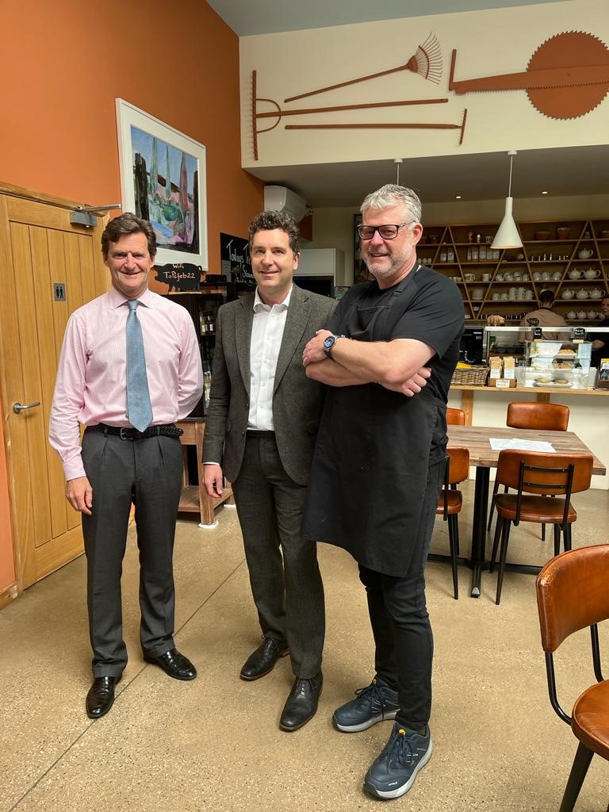
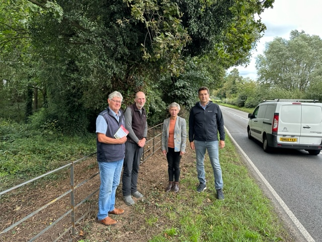

Parish Council Meeting Monday 16th September 2024.
Annual Governance And Accountability Return 2023-2024.
Accounts for 2023-2024 can be viewed here
Parish Council Meeting Monday 8th January 2024.
MP Visits the Park View Business Centre.
Our MP, Edward Timpson (centre of photo), visited the Park View Business Centre during his visit to discuss the Parish Council's Safer Roads policy. The photograph was taken in the The Old Piggery Cafe which is situated in the business centre.

Safer Roads - Visit by Edward Timpson MP.
Our MP attended a meeting outside Combermere Abbey close to the scene of a recent fatal accident. Clive explained to Edard Timpson about our compaign to make local roads safer by concentrating on xxx areas.
Photograph taken at 31st August 2023 on the A525 outside Combermere Abbey near to the site of the recent accident.

Parish Councillors Clive Pownall and Ian Barton. Cheshire East Councillor Rachel Bailey and our MP Edward Timpson
- [ ] Edward also visited the Piggery Cafe and other businesses at Park View Business Centre.
Parish Council Meeting
There is a Parish Council meeting at Burleydam Church on Monday 11th September starting at 7:00pm. All are welcome to attend.
Safer Roads.
In order to help make our roads safer we suggest you write to one of the three people listed in the links below. There are names and addresses for the Director of Highways, the Leader of the Council and our MP (Joel Hetherington).
There also sample letters which you can download and use yourself, or use as a format for your letter.
This is a list of the three people to whom you can send letters concerning safer roads:
You can download sample letters in several different formats from this link: